Our model succeeds in 98% or more of the test runs on three of LIBERO's four suites. This chapter shows what those tasks are, how a run is scored, and why the first picture already gives most of them away.
Chapter 3 of 612 min readNeeds chapters 1 and 2
After this chapter you can
name the four LIBERO suites and what changes between the tasks in each
describe how a standard evaluation is run and scored
explain why a 98% score doesn't show that a model reads the instruction
Picture one table in the -Goal . On it are a bowl, a plate, a stove, a wine bottle, a cream cheese box and a small cabinet with drawers. The same table, with the same objects in the same places, is used for ten different tasks. Among them are open the middle drawer of the cabinet, put the bowl on the stove, turn on the stove and put the bowl on the plate. When the starts, the picture is the same for all ten. Only the sentence says which one to do.
Figure 3.1 plays three recordings made at that table, each of a person doing a different one of the ten tasks. For the first second the three tables look alike. Then the three arms go three different ways.
put the bowl on the plateturn on the stoveput the wine bottle on top of the cabinet
Figure 3.1 · One table, three tasks. Three demonstrations from the dataset pi05_libero was trained on, side by side at the speed they were recorded, 10 frames a second. They start from the same arrangement, give or take a few centimetres, and only the task differs. For each task this is the dataset's first demonstration, so none of them was picked for how it looks. As in every picture from this dataset, left and right are swapped compared with the LIBERO paper's figures, because that's how the model receives them. Video: our cut of physical-intelligence/libero, CC BY 4.0, episodes 379, 388 and 385 (tools/ch3/make_goal_demos_clip.py).
What LIBERO is
LIBERO (Liu et al., 2023) is a set of 130 robot manipulation tasks in . It runs on , which runs on the physics engine, and the robot is a simulated arm. Each task comes with 50 recorded by a person steering the robot with a 3D mouse, like the three in figure 3.1. Research on VLAs mostly reports four suites of ten tasks each, and the suites differ in what stays the same from one task to the next.
Suite
What stays the same
What changes between tasks
Example instruction
LIBERO-Spatial
the objects (two identical black bowls, a plate, a ramekin and others)
where they are placed, and which bowl is meant
pick up the black bowl between the plate and the ramekin and place it on the plate
LIBERO-Object
the basket and the task type
which grocery item to pick, and the items on the floor
pick up the alphabet soup and place it in the basket
LIBERO-Goal
the scene, the objects and their positions
the goal
put the wine bottle on top of the cabinet
LIBERO-10 also called LIBERO-Long
nothing in particular
scene and goal; each task has two steps
put both the alphabet soup and the tomato sauce in the basket
Figure 3.2 shows the four suites in the pictures LIBERO's own paper uses for them.
LIBERO-Spatial · the ten starting tables
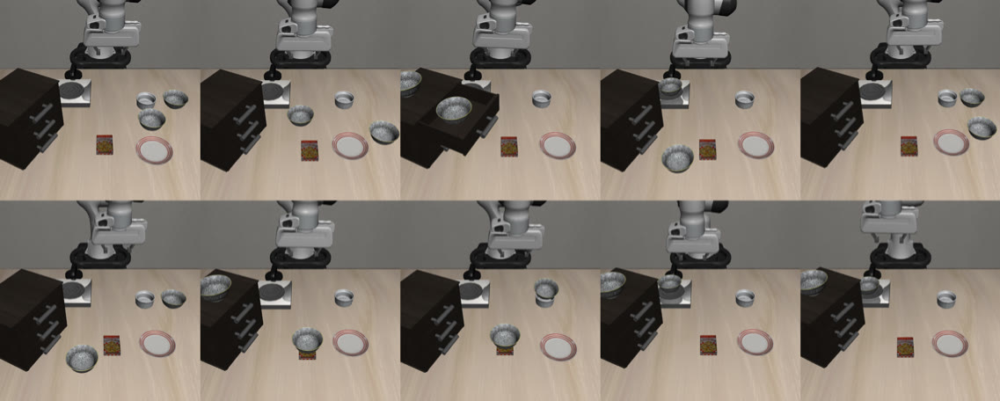
LIBERO-Object · each task finished
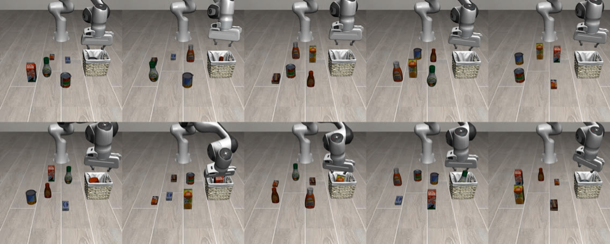
LIBERO-Goal · each task finished
LIBERO-100 · 90 + 10 tasks, each finished
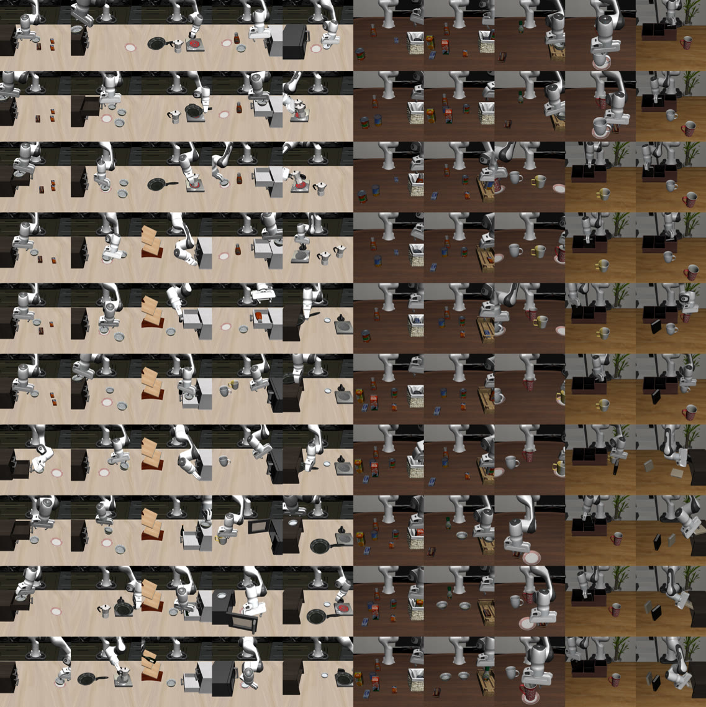
Figure 3.2 · The four suites, as the LIBERO paper shows them. In Spatial the objects stay and the two bowls move. In Object the basket stays and the groceries change. In Goal the whole table stays, and each picture is a different task done on it. LIBERO-100 mixes kitchens, living rooms and a study. LIBERO-10 is ten of its tasks, and the paper doesn't mark which tiles those are. The paper shows Spatial's starting tables and every other task at its end (its appendix C.1), with left and right the way the paper draws them. Images: Liu et al. 2023, LIBERO, Figures 8 to 11, CC BY 4.0.
There is also LIBERO-90, the other ninety tasks of LIBERO-100. They are shorter and share kitchen, living-room and study scenes. Several of them use the same scene, which makes LIBERO-90 a possible source of training data where the words matter (chapter 6).
How a standard evaluation runs
Each task is written down in one text file, its . The file names the objects, gives each one a small region of the table to start in, and states the goal as a the simulator can check, such as "the bowl is on the plate". Figure 3.3 is the paper's drawing of one such file.
Figure 3.3 · A LIBERO task is a file. Box A lists the objects and the regions where they may be placed, box B says which object starts in which region, and box C is the goal: the top drawer is open and the bowl is in it, both at once. The two pictures on the right are this task's start and its goal. The left half shows how LIBERO wrote its instructions from templates of everyday human activities, which this chapter doesn't need. The drawing calls the file *.pddl; in LIBERO's code these files end in .bddl. Image: Liu et al. 2023, LIBERO, Figure 2, CC BY 4.0.
Each task has 50 fixed starting arrangements, its , stored with the benchmark. LIBERO's README says they were fixed for benchmarking, so every model is tested from the same ones. An evaluation runs one episode from each starting state, so a task gets 50 trials and a suite gets 500. Figure 3.4 shows all 50 for the task of our run in chapter 2.
0 · our run
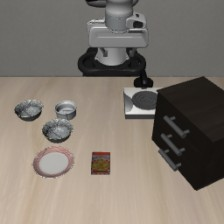
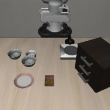
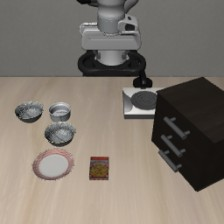
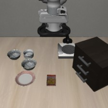
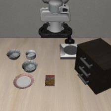
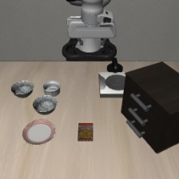
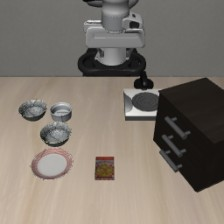
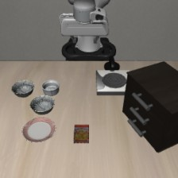
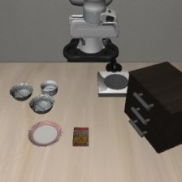
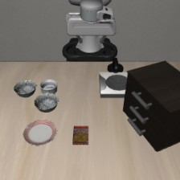
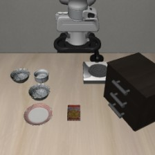
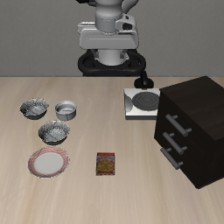
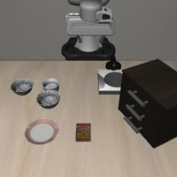
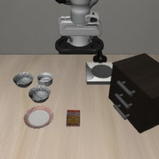
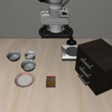
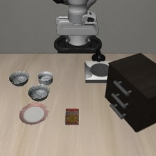
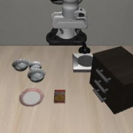
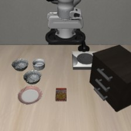
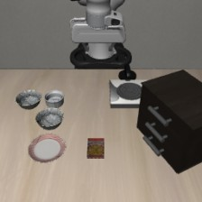
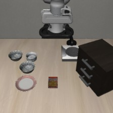
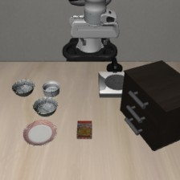
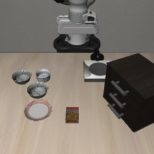
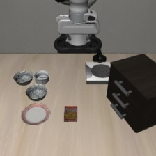
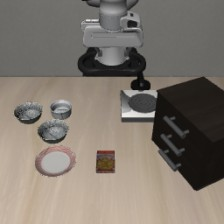
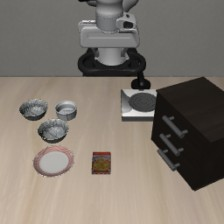
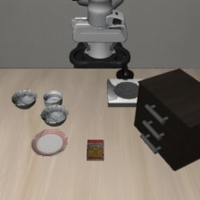
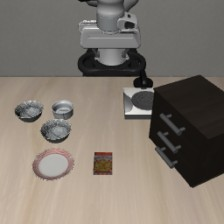
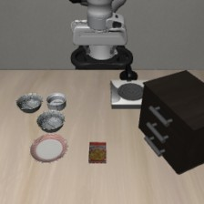
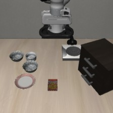
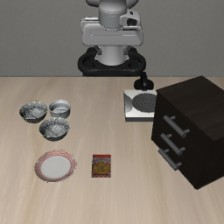
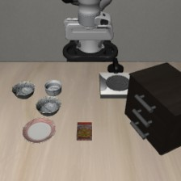
Figure 3.4 · All 50 starting states of one task, LIBERO-Spatial's pick up the black bowl between the plate and the ramekin and place it on the plate, left to right and top to bottom. Each is the first picture the model receives from that state. The objects shift by a few centimetres and the cabinet turns a little, but the bowl to take always sits between the plate and the ramekin. By our reading of the task file, each object may start anywhere in a square 2 cm on a side, and the cabinet's turn varies over 3.6 degrees. State 0, outlined, is where our chapter 2 run began, and our render of it matches the picture the model got at that run's first call. Rendered by us from LIBERO's stored starting states with openpi's settings: 10 steps for the objects to settle, then the picture turned 180 degrees and shrunk to 224 pixels (tools/ch3/render_first_frames.py). No model was run.
The simulator checks the goal condition after every step. The episode ends as soon as the condition holds, or when a step limit runs out. In 's evaluation script the limits are 220, 280, 300 and 520 steps for Spatial, Object, Goal and LIBERO-10. The script's comments give the longest training demonstration in each suite as 193, 254, 270 and 505 steps, so each limit sits a little above it. Figure 3.5 follows our chapter 2 run to its end.
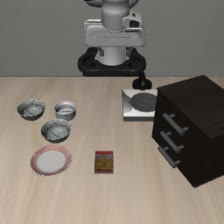
step 0the first picturestep 35hand over the bowls
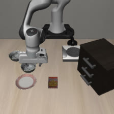
step 70bowl in the gripper
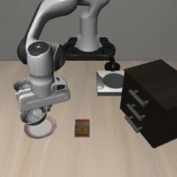
step 100bowl over the plate
step 104 · bowl on the plate: success0220 · step limit
Figure 3.5 · One episode, start to end. Four table-camera pictures from our chapter 2 run, as the model received them, above the steps it ran, to scale. This task's goal condition is (On akita_black_bowl_1 plate_1), the bowl on the plate. It held at step 104, so the episode stopped there and counted as a success. If it had never held, the episode would have stopped at step 220 and counted as a failure. The white dots mark the four pictures, and the ruler's ticks are 10 steps apart. Recording: our run of openpi's pi05_libero checkpoint, 2026-11-11.
The is the share of episodes that met the goal. One run of the four-prompt plan we submitted (chapter 6) therefore comes to 4 prompts × 4 suites × 10 tasks × 50 trials = 8,000 episodes.
Why a high score doesn't prove the words were read
Predict first
Before you look at figure 3.6: in which of the four suites could you name the task from its first picture alone, without the sentence?
In LIBERO-Spatial, LIBERO-Object and LIBERO-10, almost every task starts from its own arrangement of objects, so the picture at the first step is usually enough to tell which task this is. A model can reach a high score by learning "this arrangement means this motion" and never looking at the sentence. Figure 3.6 puts the first picture of all 40 tasks side by side.
LIBERO-Spatialpick up the black bowl … and place it on the plate9 starting tables for 10 tasks
between plate & ramekin
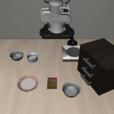
next to the ramekin
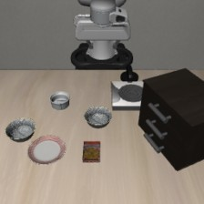
from table center
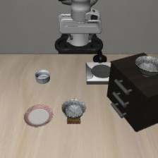
on the cookie box
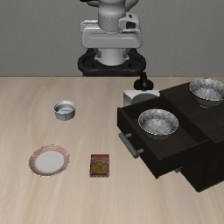
in the top drawer
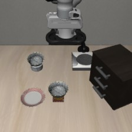
on the ramekin
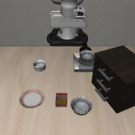
next to the cookie box
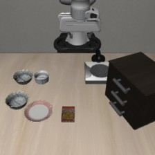
next to the plate
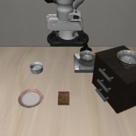
on the stove
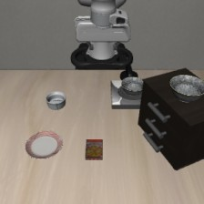
on the wooden cabinet
same starting table
LIBERO-Objectpick up the … and place it in the basket10 starting tables for 10 tasks
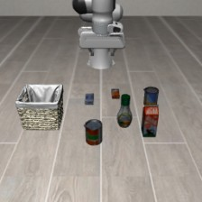
alphabet soup
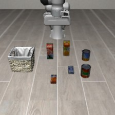
cream cheese
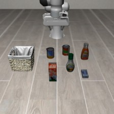
salad dressing
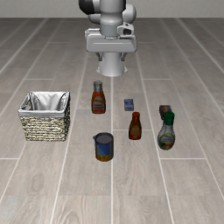
bbq sauce
ketchup
tomato sauce
butter
milk
chocolate pudding
orange juice
LIBERO-Goalone table, ten goals1 starting table for 10 tasks
open the middle drawer
bowl on the stove
wine bottle on top of the cabinet
open top drawer, bowl inside
bowl on top of the cabinet
push plate to the front of the stove
cream cheese in the bowl
turn on the stove
bowl on the plate
wine bottle on the rack
LIBERO-10two steps each9 starting tables for 10 tasks
stove on, moka pot on it
bowl in bottom drawer, close it
two mugs on two plates
book in the caddy
mug on plate, pudding to its right
soup and cream cheese in the basket
both moka pots on the stove
mug in the microwave, close it
soup and tomato sauce in the basket
cream cheese and butter in the basket
same starting table
Figure 3.6 · The first picture of every task, one row per suite. Each is what the model receives at its first call, from starting state 0, made the same way as figure 3.4. In the Spatial, Object and LIBERO-10 rows the pictures differ, so the picture alone names the task. The exceptions are the two boxed pairs, which we moved to the end of their rows so they sit side by side. In the Goal row all ten pictures show one table, apart from the few-centimetre shifts every start has. The labels are shortened from LIBERO's task sentences, and the counts of starting tables come from our comparison of the task files (2026-11-11). Rendered by us from LIBERO's stored starting states; no model was run.
We checked each task's starting layout in LIBERO's task files and found those two exceptions. In LIBERO-Spatial, pick up the black bowl on the stove and pick up the black bowl on the wooden cabinet start from the same table. One black bowl sits on the stove and an identical one sits on the cabinet, so the picture can't say which one to take. In LIBERO-10, put both the alphabet soup and the tomato sauce in the basket and put both the cream cheese box and the butter in the basket also start from the same table. For each of these pairs, only the sentence tells the two tasks apart. Figure 3.7 shows both pairs at full size.
LIBERO-Spatial
pick up the black bowl on the stove and place it on the platepick up the black bowl on the wooden cabinet and place it on the plate
LIBERO-10
put both the alphabet soup and the tomato sauce in the basketput both the cream cheese box and the butter in the basket
Figure 3.7 · Two tasks, one table, twice. At the first step the model gets the same picture for both tasks of a pair, and only the sentence differs. In the Spatial pair, one black bowl sits on the stove and an identical one on top of the cabinet. Chapter 4 runs our model on this pair with and without the sentence. Rendered by us from starting state 0 of each task.
LIBERO-Goal is the exception. All ten tasks share one picture, so a model that ignores the sentence has to guess. If it picked one of the ten tasks at random, it would succeed about one time in ten. This is our own arithmetic; chapter 5 shows a published number that matches it.
A common wrong belief
“98% on LIBERO-Spatial means the model understands spatial words like between.”
Figure 3.6 shows why that doesn't follow. The model only has to tell ten arrangements apart, and the pictures differ. In eight of the ten Spatial tasks the starting table belongs to that task alone, so the picture points to the right bowl as clearly as between the plate and the ramekin does. The stove and cabinet pair is the one place in the suite where the words have to do the work.
Go deeper
The words as a task number, our check, and LIBERO's own reel
LIBERO's own finding
The words worked like a task number
LIBERO's authors trained their own, much smaller policies on these suites. Giving each policy the task's sentence as a language embedding did no better than giving it a bare task number. By our reading this is the same shortcut seen from the other side: a policy only needs to know which task it's on, and a number tells it that as well as a sentence.
Each task file has an (:init) block that says where every object starts. We compared those blocks across the four suites, then compared the two shared pairs line by line. Goal has 1 starting table for its 10 tasks, Spatial 9, Object 10 and LIBERO-10 9. The pictures on this page come from a script that builds each scene from LIBERO's stored states and runs no model.
LIBERO's datasets page plays a reel of the human demonstrations that come with the suites. The site carries no licence, so we link to it instead of copying it here.
The plan we submitted (chapter 6) compares suites. LIBERO-Goal is the one suite where the benchmark forces the model to read, and the other three let it get away without reading, apart from the two pairs in figure 3.7. The interesting results sit in the gap between them. Chapter 4 turns this into tests.
Check yourself
In which suite must a model read the instruction to succeed, and why?
Show answer
LIBERO-Goal. All ten tasks start from the same scene, so only the sentence tells them apart.
How many episodes does one full evaluation of one suite under one prompt take?
Show answer
500 (10 tasks × 50 trials).
A model scores 98% on LIBERO-Spatial. Explain why that doesn't show it understands between the plate and the ramekin.
Show answer
The "between the plate and the ramekin" task starts from its own arrangement of objects, so the picture alone identifies the task. The model can map arrangements to motions without using the words.
In questions 4 to 8, pick the answer you think is right. The option opens and says whether it's right and why, and you can open the others afterwards to see what's wrong with them.
pi05_libero succeeds in 98.8% of LIBERO-Spatial episodes. What does that show about the word between?
The model understands it, because the Spatial sentences pick the bowl by where it is.
No, and this is the wrong belief the chapter names. Eight of the ten Spatial tasks start from a table no other task uses, so the picture picks the bowl as well as the sentence does. The score can't tell which of the two the model went by.
Nothing either way, because the picture already says which bowl to take in almost every Spatial task.
Right. A model can score high by learning each starting table's motion. Only the stove and cabinet pair needs the words, and a score over all ten tasks hides how the model did on those two.
It ignores the words, since the picture is enough.
No, that goes too far the other way. The score shows only that the model doesn't need the words for most of these tasks, not that it never uses them. Chapter 4 tests that.
Which suite starts all ten of its tasks from the same table?
LIBERO-Spatial, since its ten tasks use the same objects.
No. The objects are the same, but the two black bowls start in different places in each task, so the tables differ (figure 3.6, top row).
LIBERO-Object, since every task puts something in the same basket.
No. The basket stays, but each task has its own set of groceries on the floor, in its own places.
LIBERO-Goal.
Right. All ten tasks start from one arrangement of the bowl, plate, stove, wine bottle, cream cheese and cabinet, so only the sentence says which task it is.
A LIBERO-Spatial episode has run for 150 steps, and the bowl still isn't on the plate. When does the episode end?
When the bowl reaches the plate, or at step 220 if it never does.
Right. The simulator checks the goal condition after every step. If it holds, the episode ends as a success, and if it still doesn't hold at the 220-step limit, the episode ends as a failure.
When the model decides the task is done and stops sending actions.
No. The model has no way to stop an episode. Its actions only move the hand and open or close the gripper, and the simulator decides when the episode is over by checking the goal condition.
At step 104, the length of our run.
No. 104 is when the goal happened to hold in our run. A Spatial episode that hasn't reached its goal keeps going until step 220.
What are the 50 trials of one task?
50 different tables, each with its own objects.
No. All 50 use the same objects in the same arrangement, and only small shifts differ (figure 3.4).
50 new random arrangements, drawn fresh for every evaluation.
No. The 50 starting states are stored with the benchmark, so every model and every run starts from the same 50.
The same arrangement 50 times, with the objects shifted by a few centimetres each time, stored with the benchmark.
Right. One episode runs from each stored state, so a task gets 50 trials and a suite gets 500.
Why do the two shared pairs in figure 3.7 matter for our question?
Outside LIBERO-Goal, they are the only tasks whose first picture can't say which task it is, so the words have to.
Right. In suites where the picture usually gives the task away, these four tasks can only be told apart by reading. Chapter 4 runs our model on the Spatial pair.
They show a mistake in the benchmark that makes those tasks impossible.
No. Every task in a pair can be done. The sentence says which bowl, or which two groceries, to take, so a model that reads it can succeed.
They make LIBERO-Spatial as hard to guess as LIBERO-Goal.
No. One pair among ten tasks still leaves eight Spatial tasks with a table of their own. In Goal, all ten share one.
Sources
Liu et al. (2023), LIBERO: Benchmarking Knowledge Transfer for Lifelong Robot Learning, NeurIPS Datasets and Benchmarks. arXiv 2306.03310, licence CC BY 4.0, and libero-project.github.io. Read 2026-11-13: 130 tasks in four suites; 50 demonstrations per task by teleoperation with a 3Dconnexion SpaceMouse; a task is defined by its starting-state distribution and its goal predicate (Section 2); "The simulation terminates when all predicates are verified true" (Section 4.1); finding 3 on language embeddings and task IDs (Section 1); Figure 8 shows starting states and Figures 9 to 11 goal states (Appendix C.1). Figures 2 and 8 to 11 reused under CC BY 4.0.
LIBERO's code, at the commit openpi pins (f78abd6, checked 2026-11-13): the README's note that the starting states are fixed for benchmarking; libero/libero/benchmark/__init__.py, which loads each task's stored states from its .pruned_init file; libero/libero/envs/bddl_base_domain.py, whose step checks the goal after every step; and the task files in libero/libero/bddl_files/. github.com/Lifelong-Robot-Learning/LIBERO
openpi examples/libero/main.py at commit 215abfb: the step limits and the longest-demonstration comments beside them, 50 trials per task, seed 7, 10 settling steps, and the 180-degree turn of both pictures. Checked 2026-11-11 and 2026-11-13. github.com/Physical-Intelligence/openpi
Our comparison of the task files' (:init) blocks in all four suites, 2026-11-11: Goal 10 tasks from 1 layout, Spatial 10 from 9, Object 10 from 10, LIBERO-10 10 from 9, with the two shared pairs compared in full.
physical-intelligence/libero, CC BY 4.0: demonstrations 379, 388 and 385, the first of their tasks in the dataset, read through the Hugging Face datasets-server on 2026-11-13. huggingface.co/datasets/physical-intelligence/libero
Our renders of LIBERO's stored starting states, 2026-11-13, with tools/ch3/render_first_frames.py in this repo. Our render of LIBERO-Spatial task 0 from state 0 differs from the picture the model received in that run by 1.2 on average per pixel value (out of 255, about what JPEG compression leaves), against 5.3 for state 1.
Our run of openpi's pi05_libero checkpoint on 2026-11-11: LIBERO-Spatial task 0, first starting state, success at step 104. Kept in the repo under stage1/runs/recorded-call-spatial0/.
Zhou et al. (2025), LIBERO-PRO. arXiv 2510.03827 (the argument that LIBERO rewards memorising layouts)